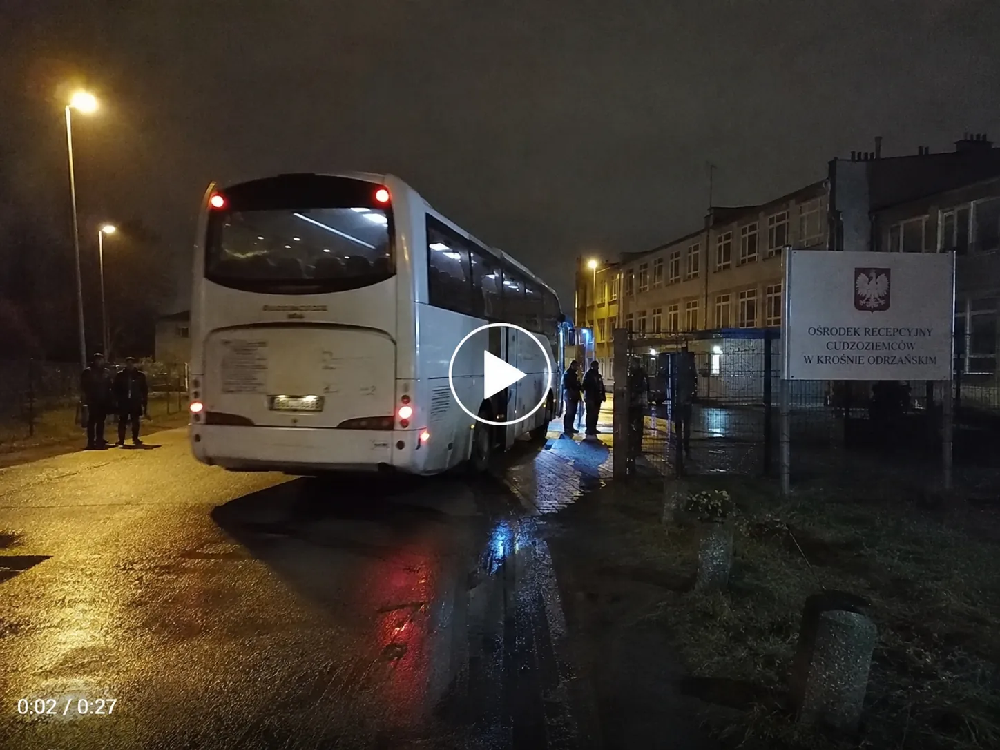

Natalia Krawiec@natalia.raport24.bsky.social · 12 lip 2026
Dostałam nagranie z nocnego transportu migrantów z Niemiec do ośrodka w woj. lubuskim. Mieszkańcy podobno nie zostali wcześniej poinformowani. Czy tak wygląda „dobrowolna solidarność” w praktyce?
@pap.pl @tvn24.pl @polsatnews.pl @rmf24.pl @onet.pl — sprawdzicie, dlaczego nikt o tym nie mówi? #migracja #granica #relokacja
